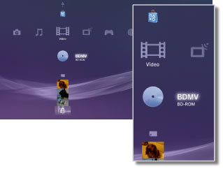

Vídeo > Categoria Vídeo
Categoria Vídeo
Os seguintes ícones são exibidos em  (Vídeo). Os ícones exibidos variam dependendo das condições de uso.
(Vídeo). Os ícones exibidos variam dependendo das condições de uso.

 |
Utilitário de dados de BDs | Dados administrativos utilizados pelo Blu-ray Disc™ (BD) são salvos. |
|---|---|---|
 |
Pesquisar servidores de mídia | Inicia uma pesquisa dos Servidores de Multimídia DLNA conectados na mesma rede. |
 |
Servidor de multimídia | Conecta os Servidores de Multimídia DLNA e reproduz os arquivos de vídeo armazenados neles. O ícone exibido varia dependendo do tipo de servidor. |
 |
Ferramenta de edição e upload de vídeo | Edita o conteúdo de vídeo salvo no armazenamento do sistema PS3™. |
 |
BD-ROM / BD-R / BD-RE | Reproduz um Blu-ray Disc (BD). |
 |
DVD-ROM / DVD-R / DVD+R / DVD-RW / DVD+RW | Reproduz um DVD ou Disco AVCHD. |
 |
Disco de dados | Reproduz os arquivos de vídeo salvos em uma mídia de disco compatível e gravável, tal como um CD-R ou DVD-R. |
 |
Memory Stick™ | Reproduz os arquivos de vídeo salvos na mídia Memory Stick™.* |
 |
Cartão SD | Reproduz os arquivos de vídeo salvos em um SD Memory Card.* |
 |
CompactFlash® | Reproduz os arquivos de vídeo salvos em um CompactFlash®.* |
 |
PSP™ (PlayStation®Portable) | Reproduz os arquivos de vídeo salvos no Memory Stick™ de um sistema PSP™. |
 |
PSP™ (PlayStation®Portable) | Reproduz os arquivos de vídeo salvos no armazenamento do sistema PSP™go. |
 |
Câmera digital | Reproduz os arquivos de vídeo salvos em uma câmera digital compatível com o sistema PS3™. |
 |
WALKMAN® / ATRAC Audio Device(WALKMAN®) | Reproduz os arquivos de vídeo salvos em um WALKMAN®/ATRAC Audio Device (WALKMAN®). |
 |
ATRAC Audio Device | Reproduz os arquivos de vídeo salvos em um ATRAC Audio Device. |
 |
Dispositivo USB | Reproduz os arquivos de vídeo salvos em um dispositivo USB de armazenamento em massa. |
 |
Filmes da câmera digital | Reproduz os arquivos de vídeo salvos na pasta DCIM da mídia de armazenamento. |
|
(pasta) | Este ícone é exibido para as pastas criadas na mídia de armazenamento utilizando um PC. |
 |
(arquivos salvos no armazenamento do sistema) | Reproduz os arquivos de vídeo salvos no armazenamento do sistema PS3™. Imagens em miniatura são exibidas. |
 |
(dados baixados para o armazenamento do sistema) | Esse ícone é exibido nos arquivos de vídeo baixados para o armazenamento do sistema. Ao iniciar, os dados são instalados e o arquivo de vídeo pode ser reproduzido. |
| * |
Um adaptador USB adequado (não incluído) é necessário para utilizar a mídia de armazenamento com alguns modelos do sistema PS3™. Quando utilizada com um adaptador USB, a mídia de armazenamento será exibida como |
|---|
 (Dispositivo USB).
(Dispositivo USB).Dicas
- A venda e o aluguel do conteúdo do vídeo da PlayStation®Store no sistema PS3™ foram descontinuados.
- Para obter detalhes sobre o DLNA, veja
 (Configurações) >
(Configurações) >  (Configurações de rede) > [Conexão ao servidor de mídia] neste guia.
(Configurações de rede) > [Conexão ao servidor de mídia] neste guia. - Para que o sistema reproduza o conteúdo protegido por direitos autorais de um Blu-ray Disc na resolução 1080p, você deve utilizar um cabo HDMI para conectar o sistema a um dispositivo compatível com o padrão HDCP (High-bandwidth Digital Content Protection).
- As imagens em miniatura podem não ser exibidas com alguns tipos de arquivos de vídeo protegidos por direitos autorais.
- Ao reproduzir um BD com um conteúdo com restrições de controle parental, a reprodução será limitada de acordo com o nível de controle parental definido no sistema PS3™. O nível do controle parental BD pode ser ajustado em (Configurações) >
 (Configurações de segurança).
(Configurações de segurança). - Ao reproduzir um DVD com um conteúdo com restrições de controle parental, pode ser necessária uma senha para reproduzir o conteúdo. A senha pode ser ajustada em (Configurações) > (Configurações de segurança).
- O conteúdo com restrições de controle parental é exibido como
 . Você pode habilitar a reprodução destse conteúdo inserindo uma senha de 4 dígitos. A senha pode ser definida ou alterada em (Configurações) > (Configurações de segurança).
. Você pode habilitar a reprodução destse conteúdo inserindo uma senha de 4 dígitos. A senha pode ser definida ou alterada em (Configurações) > (Configurações de segurança). - Os BDs travados são exibidos como
 . Para reproduzir outro conteúdo nestes discos, insira a senha definida pelo desenvolvedor do disco.
. Para reproduzir outro conteúdo nestes discos, insira a senha definida pelo desenvolvedor do disco. - Em raras ocasiões, discos e outras mídias podem não funcionar corretamente quando reproduzidos no sistema PS3™. Isto ocorre principalmente devido às variações no processo de fabricação ou na codificação do software.
- Se um dispositivo incompatível com o padrão HDCP (High-bandwidth Digital Content Protection) for conectado ao sistema utilizando um cabo HDMI, o vídeo e/ou áudio não poderá ser reproduzido pelo sistema.
Assistindo ao conteúdo 3D
Uma televisão 3D compatível com o padrão 3D e um cabo HDMI de alta velocidade são necessários para assistir ao conteúdo 3D.
Dicas
- Dependendo do conteúdo, enquanto o conteúdo Blu-ray 3D™ estiver sendo reproduzido, alguns elementos, tais como menus e legendas, poderão ser exibidos diferentemente em 3D no sistema PS3™ em comparação com outros dispositivos de reprodução.
- Dependendo do conteúdo, alguns recursos do BD-J podem não ser reproduzidos em 3D ou podem não funcionar corretamente no sistema PS3™.
- O áudio Dolby TrueHD não é compatível durante a reprodução do conteúdo Blu-ray 3D™. Em vez disso, o formato Dolby Digital é utilizado.
Armazenamento Local do Blu-ray Disc (BD)
Se uma mensagem de erro indicando que o espaço do Armazenamento Local é insuficiente for exibida durante a reprodução de um BD, exclua os arquivos desnecessários no armazenamento do sistema para aumentar a quantidade de espaço livre.
O Armazenamento Local é uma área de armazenamento local definida no padrão BD-ROM Profile 1.1 / 2.0. Esses dados são armazenados no armazenamento do sistema PS3™.